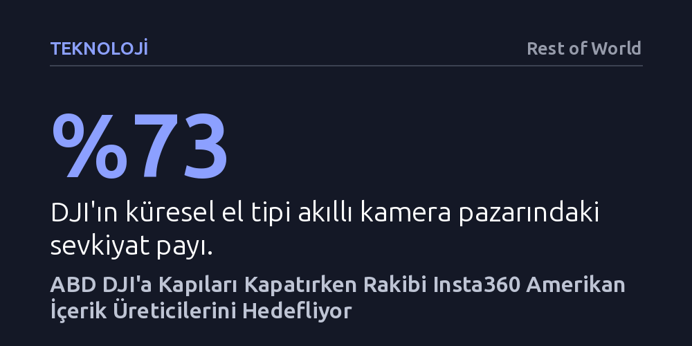

TEKNOLOJI · Rest of World · 2026-10-10
ABD'nin ulusal güvenlik gerekçesiyle pazar lideri DJI'a yeni ürün yasağı getirmesini fırsat bilen rakibi Insta360, yeni kurduğu bağımsız dron markası ve New York'taki mağazasıyla Amerikan tüketici elektroniği pazarına hızla yerleşiyor.
Washington'ın Çinli teknoloji devlerine yönelik yaptırımlarının sektörü tamamen kapatmak yerine, kurallara daha esnek uyum sağlayan yeni nesil Çinli rakiplerin önünü nasıl açtığını gösteriyor.

Eylül ayında New York'un kalbi Times Square'de açılan yeni bir teknoloji mağazasının önünde dikkat çekici bir kalabalık toplandı. Dünyanın dört bir yanından gelen içerik üreticileri, üzerlerinde parlak sarı logolu tişörtlerle caddelerde pedal çeviren bisikletliler ve avuç içi büyüklüğündeki akıllı kameraları inceleyen meraklılar, Shenzhen merkezli Insta360'ın ilk Amerikan amiral mağazasını kutluyordu. GoPro'nun açtığı aksiyon kamerası kulvarını 360 derecelik panoramik çekimlerle dönüştüren şirket, bu açılışla Amerikalı seyahat ve spor tutkunlarına doğrudan hitap eden agresif bir büyüme evresine girdi.
Bu tablo, Çin menşeli teknoloji markalarının Washington'da benzeri görülmemiş bir denetim ve şüpheyle karşılaştığı bir dönemde açık bir meydan okuma niteliği taşıyor. Üstelik sahnenin gerisinde, küresel el tipi kamera sevkiyatlarının yüzde 73'ünü kontrol eden Çinli dev DJI ile yaşanan amansız bir pazar kavgası yatıyor. DJI tüketici dronlarında mutlak hakimiyetini sürdürürken, Insta360 el kameralarında elde ettiği yüzde 20'lik payı şimdi dron alanına da taşıyarak rakibinin en büyük kalesine hücum ediyor.
İki Shenzhenli şirketin Amerika'daki talihi, jeopolitik kararlar nedeniyle tamamen zıt yönlere savruldu. ABD Savunma Bakanlığı, DJI'ı Çin askeri şirketi olarak niteleyerek kara listeye aldı ve DJI yıllardır bu yaftayı kaldırtmak için mahkemelerde mücadele veriyor. Durum bununla da kalmadı; ABD Kongresi'nin kabul ettiği 2024 Ulusal Savunma Yetkilendirme Yasası, Federal İletişim Komisyonu'na (FCC) DJI ve benzeri üreticilerin yeni cihazlarını 'Kapsananlar Listesi'ne (Covered List) ekleme zorunluluğu getirdi. Komisyon, geride kalan aylardan bu yana hiçbir yeni DJI ürününe satış onayı vermiyor.
DJI halen raflardaki eski modellerini satabiliyor olsa da Amerikan pazarında geleceği belirsizliğe gömülmüş durumda. Tam bu noktada Insta360, düzenleyici kuralların netleşmiş olmasından faydalandı. FCC'nin yasaklı listesine dahil edilmeyen şirket, hem mevcut kameralarını bürokratik engele takılmadan ülkeye soktu hem de DJI ekosisteminin geleceğinden endişe eden profesyonel kullanıcıları ve vlogger'ları kendi safına çekmeye başladı.
Insta360'ın en stratejik adımı, dron pazarına doğrudan kendi kurumsal kimliğiyle girmek yerine 2025 yılında 'Antigravity' adında bağımsız bir marka kuluçkalamak oldu. Üçüncü taraflarla ortaklaşa kurulan bu yapı, olası dron yasaklarının şirketin ana gelir kapısı olan kamera operasyonlarına sıçramasını önlemeyi hedefliyor. Üstelik şirket, 360 derece kameralı ilk modeli A1 için FCC onayını, yabancı menşeli yeni dronları engelleyen düzenleme tam yürürlüğe girmeden önce almayı başardı.
Antigravity, Amerikan güvenlik bürokrasisinin endişelerini bertaraf etmek için cihazın donanımına ve veri mimarisine sıra dışı kısıtlamalar getirdi. Şirketin Los Angeles merkezli yöneticisi Michael Shabun, ABD kullanıcılarının verilerinin tamamen yerel sunucularda tutulduğunu ve dronun 50 gramdan fazla ilave ağırlık taşıyamayacak şekilde tasarlandığını belirtiyor. Bu ağırlık kısıtı, cihazın casusluk ya da mühimmat taşıma gibi hobi dışı amaçlarla kötüye kullanılmasını fiziksel olarak engelliyor. Shabun cihazın ruhunu "Onlar eğlence için yapıldı; içerik üretimi için yapıldı; keşif için yapıldı," sözleriyle tanımlarken, üretimi de Asya'dan kademeli olarak ABD topraklarına taşımayı vadettiklerini vurguluyor.
Şirketlerin Amerikan pazarına bu denli asılmasının arkasında sadece büyüme hevesi değil, Çin iç pazarındaki şiddetli daralma da yer alıyor. Çin'de yavaşlayan tüketici harcamaları, iki üretici arasında el kameralarında yıkıcı bir fiyat rekabetine ve patent davalarına dönüştü. Bellek çiplerindeki maliyet patlaması da eklenince, Insta360'ın net kârı 2026'nın ilk yarısında yıllık bazda yüzde 94 oranında eridi. Dolayısıyla alım gücü yüksek Amerikan tüketicisi, şirket için kârlılığı ayakta tutmanın tek yolu haline geldi.
Bu tablo aynı zamanda Huawei, TikTok ve DJI gibi geçmişte doğrudan yaptırım duvarına çarpan ilk kuşak şirketler ile günümüzün 'ikinci dalga' Çin markaları arasındaki farkı gösteriyor. Yeni nesil markalar, doğrudan devlet politikalarıyla çatışmak yerine regülasyonları baştan okuyup iş modellerini bu sınırlara göre inşa ediyor. Üretimi yerelleştirme taahhütleri vererek, teknik kısıtlamalar getirerek ve gri alanlardan uzak durarak Washington'ın radarına takılmadan Amerikan pazarında kök salmayı deniyorlar.